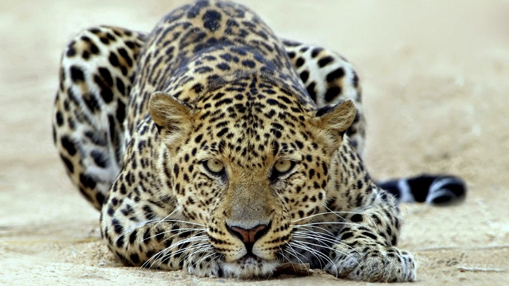

Которпеда
гепард
озеро
Врата;штейна
 тег изображения
тег изображенияозеро
Которпеда
 Белорусский государственный технологический университет — высшее учебное заведение Минска. Основной профиль — подготовка инженеров для химической и лесной промышленности, специалистов в области издательского дела и полиграфии, научные исследования в различных областях химической и лесной промышленности. Также осуществляется обучение по экономическим, компьютерным специальностям, готовятся специалисты по автоматизации производственных процессов, машинам и аппаратам химической и лесной промышленности.
тег изображения
Белорусский государственный технологический университет — высшее учебное заведение Минска. Основной профиль — подготовка инженеров для химической и лесной промышленности, специалистов в области издательского дела и полиграфии, научные исследования в различных областях химической и лесной промышленности. Также осуществляется обучение по экономическим, компьютерным специальностям, готовятся специалисты по автоматизации производственных процессов, машинам и аппаратам химической и лесной промышленности.
тег изображенияозеро
тег изображенияКоторпеда